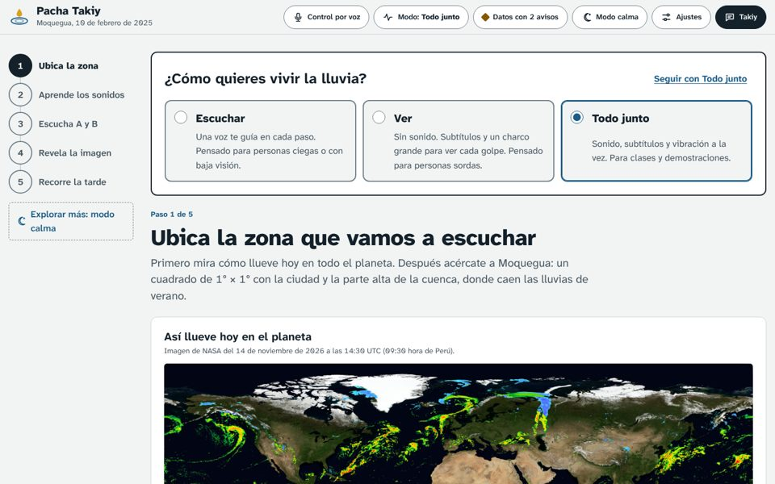
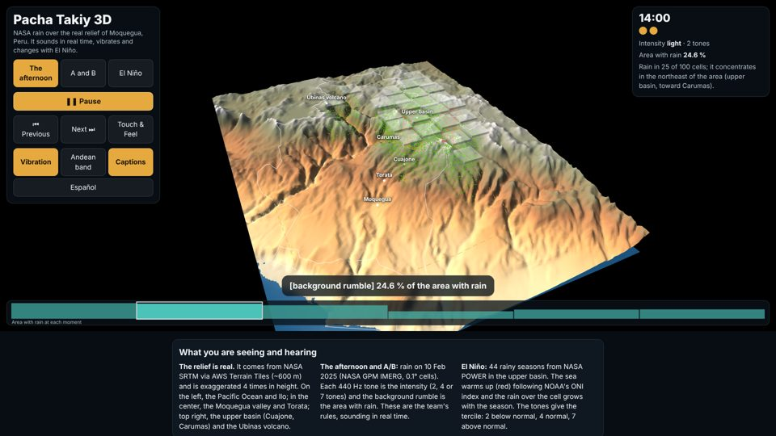
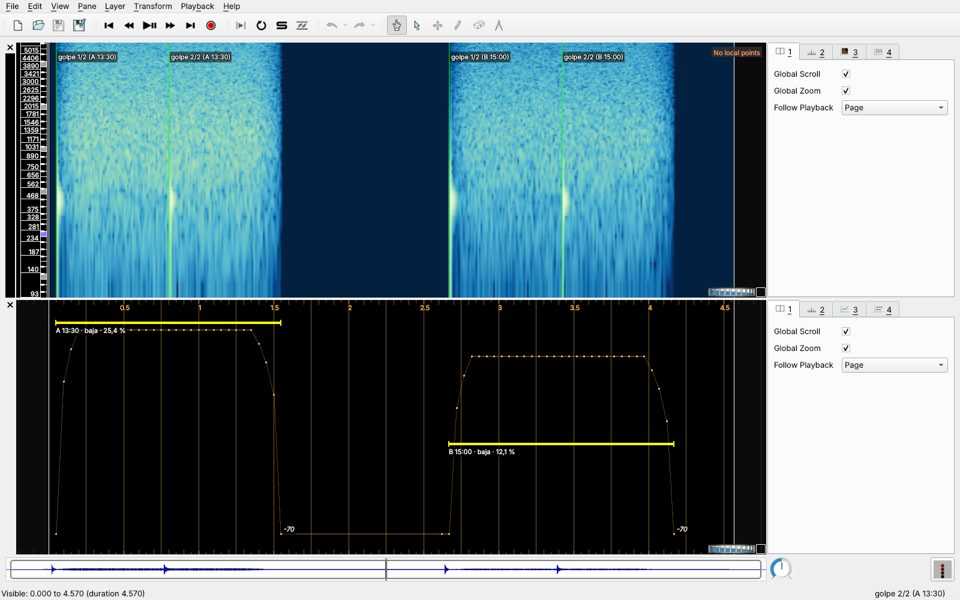

"The Earth sings" in Quechua. Hear, see and feel NASA rain in Moquegua, in the southern Andes of Peru. We turn NASA satellite rainfall into sound, vibration and text, so that blind, deaf and deafblind people can follow it too.
Escucha, mira y siente la lluvia de la NASA en Moquegua, Perú. · Team Ayni Orbital
English text on screen. You hear the real tones of the app: 2, 4 and 7 tones for light, moderate and heavy rain.

From NASA's global rain (Earth Information Center, SVS 4285) to one afternoon in Moquegua (GPM IMERG). Voice guide and voice control for blind users, "See" mode with captions and vibration for deaf users, and a calm mode with a NASA sonification.

NASA SRTM relief from the Pacific to the Ubinas volcano, with IMERG rain that sounds in real time. Touch & Feel for deafblind users, an optional Andean band, and an El Niño mode with 44 seasons of NASA POWER data.

The real browser audio matches our published acoustic model within 0.17 dB. We provide sessions for Sonic Visualiser, a Google Colab notebook and automated tests (in Spanish).
In Moquegua, summer rain falls mostly in the upper basin (Torata, Carumas), and from there the water flows down to farms, the city and mining. Knowing when and how much it rains matters to everyone, but rain maps are made for the eyes. Pacha Takiy opens NASA data to schools, farmers, local authorities and people with disabilities.